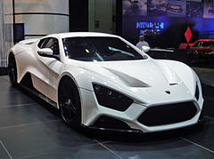
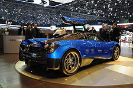
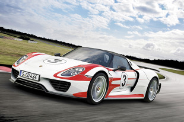
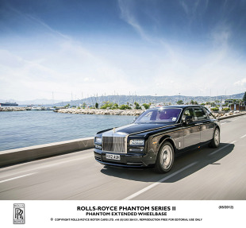

NAJDROŻSZE ORAZ NAJSZYBSZE SAMOCHODY
Miejsce 1 - Bugatti Veyron 16.4 Super Sport Cena: 6 795 000 zł
Silnik: V16, 1200 KM Prędkość maksymalna: 415 km/h Przyspieszenie 0-100 km/h: 2,5 s Podobno zwykły Veyron 16.4 przy maksymalnej prędkości opróżnia bak w ciągu dwunastu minut. Super Sport jest szybszy pod każdym względem, pewnie też zasysa szybciej. Jego prędkość maksymalną ograniczono ze względu na wytrzymałość opon. Mit marki zbudowała jej techniczna doskonałość, połączona z rysem artyzmu i powikłanymi losami członków rodziny Bugatti. Pod hasłem „zbierz całą kolekcję” firma wciąż przedstawia specjalne edycje swojego jedynego modelu, a w planach jest odmiana o mocy 1500 KM.
Miejsce 2 - Zenvo ST1 Cena: 5 472 000 zł
Silnik: V8, 1104 KM Prędkość maksymalna: 375 km/h Przyspieszenie 0-100 km/h: 3 s „Zaprojektowany i zbudowany w 100% w Danii”. Tak reklamuje swój supersamochód firma Zenvo, odwołując się chyba do sukcesu klocków Lego, z których „nie takie rzeczy ze szwagrem” można zbudować. Ma powstać tylko 15 sztuk ST1 dla ściśle wyselekcjonowanych klientów. Auto napędzane jest aluminiową wersją amerykańskiego V8 typu LSX, produkowanego przez General Motors. Bak ST1 można wypełnić benzyną lub bioetanolem E85. Jeszcze nigdy łamanie przepisów ruchu drogowego nie było tak ekologiczne.

Miejsce 3 - Koenigsegg Agera R Cena: 5 168 000 zł
Silnik: V8, 1140 KM Prędkość maksymalna: 440 km/h Przyspieszenie 0-100 km/h: 2,8 s „Jedyny hipersamochód na świecie z chowanym hardtopem”. To tylko jedna z zalet Agery R, zachwalana przez producenta. Sztywny dach wkłada się pod pokrywę z przodu. Rama z aluminium i włókna węglowego, zintegrowana ze zbiornikiem paliwa waży zaledwie 70 kg. W poszyciu nadwozia wykorzystano kevlar. Na liście opcji jest dachowy boks na narty z zawartością. Twórca firmy, Christian von Koenigsegg postanowił zbudować „hipersamochód”, gdy jako chłopiec obejrzał norweską, animowaną opowieść o majstrze, który za pieniądze bogatego szejka stworzył niezwykły pojazd.
Miejsce 4 - Pagani Huayra Cena: 4 400 000 zł
Silnik: V12, 730 KM Prędkość maksymalna: 360 km/h Przyspieszenie 0-100 km/h: 3,3 s Węglowo-ceramiczne hamulce oraz inconelowo-tytanowy układ wydechowy. Ponadto silnik V12 od AMG i logo produkowane z aluminium w procesie trwającym okrągłą dobę. Pirelli wytwarza opony specjalnie dla tego samochodu. Przy najnowszym modelu Horacio Pagani chciał pozostać wierny swojemu wielkiemu rodakowi Leonardo Da Vinici, który powiedział: „zgłębiaj naukę, która jest sztuka i sztukę, która jest nauką”. Huayra składa się z ponad 4 tys. części, a jego projektowanie trwało pełne siedem lat – jak w bajce.

Miejsce 5 - Porsche 918 Spyder Weissach Cena: 4 263 000 zł
Silnik: V8 + 2 silniki elektryczne, 887 KM Prędkość maksymalna: 345 km/h Przyspieszenie 0-100 km/h: 2,8 s We wrześniu 2013 ten model pobił rekord samochodów seryjnych na północnej pętli toru Nürburgring. Zajęło mu to 6 minut i 57 sekund. Najlepsze, że jest hybrydą plug-in, napędzaną centralnie umieszczonym benzynowym V8 i dwoma silnikami elektrycznymi. Porsche ma długą tradycję w konstruowaniu tego typu samochodów, choć na długie lata o niej zapomniało.

Miejsce 6 - SSC Tuatara
Cena: 4 260 000 zł
Silnik: V8, 1350 KM
Prędkość maksymalna: 444 km/h
Przyspieszenie 0-100 km/h: 2,3 s
To prawdziwe dzieło Shelby SuperCars. Jej założycielem jest Jerod Shelby, który poza nazwiskiem i zainteresowaniami nie ma nic wspólnego ze słynnym Carrollem, twórcą Cobry. Tuatara to inaczej hatteria, nowozelandzki gad przypominający jaszczurkę. Jest niesłychanie długowieczna, a na szczycie głowy ma trzecie oko, którego funkcja jest nieznana nauce.

Miejsce 7 - Hennessey Venom GT
Cena: 3 000 000 zł
Silnik: V8, 1244 KM
Prędkość maksymalna: 447 km/h
Przyspieszenie 0-100 km/h: 2,9 s
Amerykański Venom GT używa w dużej mierze tych samych komponentów, co Lotus Elise/Exige, ale robi z nich lepszy użytek. Firma odżegnuje się zresztą od ściślejszych powiązań z Lotus Cars. W 2007 roku Venom 1000 Twin Turbo Viper pokonał Bugatti w teście magazynu „Road i Track”. Osiągnął 200 mil na godzinę (321,8 km/h) w ciągu 20,3 sekund, blisko 4 sekundy szybciej niż Veyron. Odbierając gratulacje John Hennessey pomyślał, że wóz byłby jeszcze szybszy, gdyby był lżejszy. Prawie żartem włożył jego silnik do małego Lotusa. I tak się zaczęło… Moc Venoma GT można regulować z poziomu deski rozdzielczej: 800-1000-1244 KM.

Miejsce 8 - Lamborghini Aventador LP 700 Roadster
Cena: 1 627 000 zł
Silnik: V12, 700 KM
Prędkość maksymalna: 350 km/h
Przyspieszenie 0-100 km/h: 3,0 s
Gdy w zasięgu wzroku pojawia się Lamborghini Roadster, przypomina się stary, angielski dowcip o komunistycznych przywódcach, którzy używali na paradach samolotów z odkrytym pokładem. Jednak w upał, w mieście, przy dużym stężeniu dziewcząt na metr bieżący chodnika „Lambo” bez dachu ma pewne zalety. Poza tym, jako jeden z niewielu „supersamochodów”, korzysta ze wsparcia sieci serwisowej z prawdziwego zdarzenia. Łatwiej też znaleźć kupca na używany egzemplarz. Gdyby kryzys dokuczył…

Miejsce 9 - Rolls-Royce Phantom 6.7 V12 EWB
Cena: 1 445 000 zł
Silnik: V12, 460 KM
Prędkość maksymalna: 240 km/h
Przyspieszenie 0-100 km/h: 6,1 s
„Najlepszy samochód świata” w wydłużonej wersji roztacza wokół siebie niezwykłą aurę „najszybszej warowni świata”. Tylne miejsca są regulowane na szesnaście (!) sposobów. Przednie na osiemnaście. Klimatyzacja i wszystko, co można mieć dla rozrywki w domu w dobrej dzielnicy, jest również w Rolls-Roysie. W drzwiach są schowki z szybko wysychającymi parasolkami, pokrytymi powłoką z teflonu. Zamiast obrotomierza jest wskaźnik informujący, jaka moc pozostaje jeszcze do dyspozycji kierowcy.

Miejsce 10 - Bentley Mulsanne
Cena: 1 420 000 zł
Silnik: V8, 512 KM
Prędkość maksymalna: 296 km/h
Przyspieszenie 0-100 km/h: 5,3 s
Po rozstaniu z Rolls-Royce’m i przejściu do Volkswagena, Bentley nadal jest „tym szybszym”. Szacunki wskazują, że nawet największy w gamie Mulsanne będzie w 80% przypadków prowadzony osobiście przez właściciela. Dlatego sterowanie multimediami zgromadzono wokół kierowcy. Zdani na jego gusta muzyczne pasażerowie tylnych siedzeń, mogą pocieszyć się szampanem z kryształowych kieliszków.